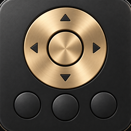
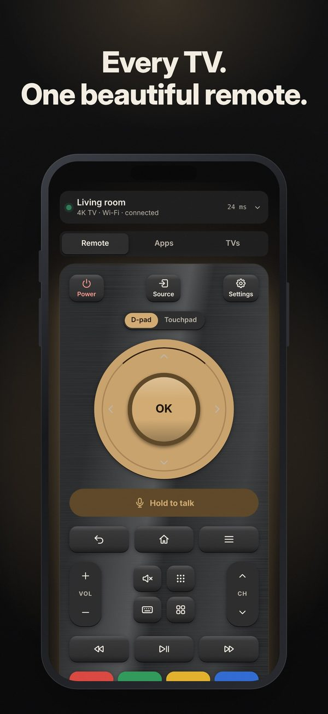
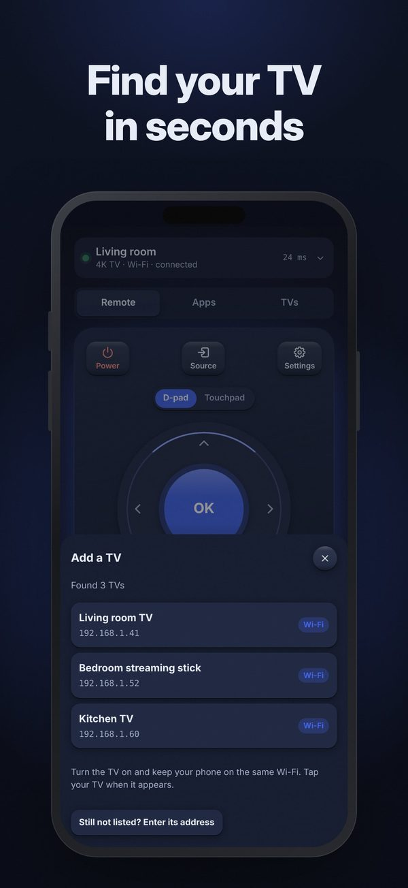
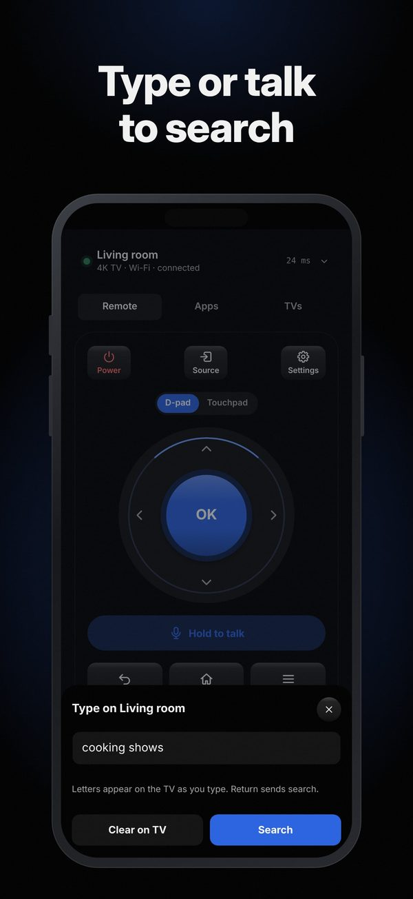
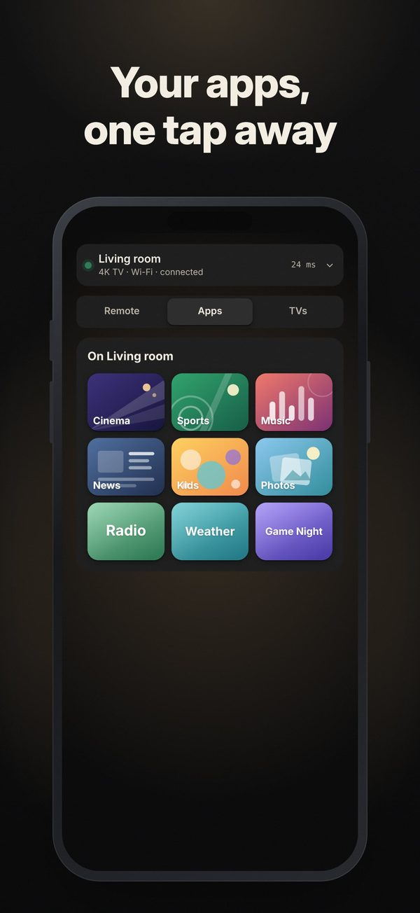
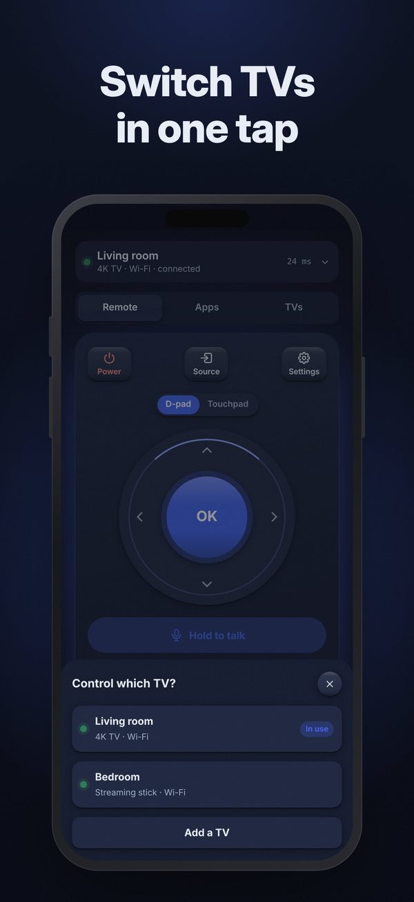
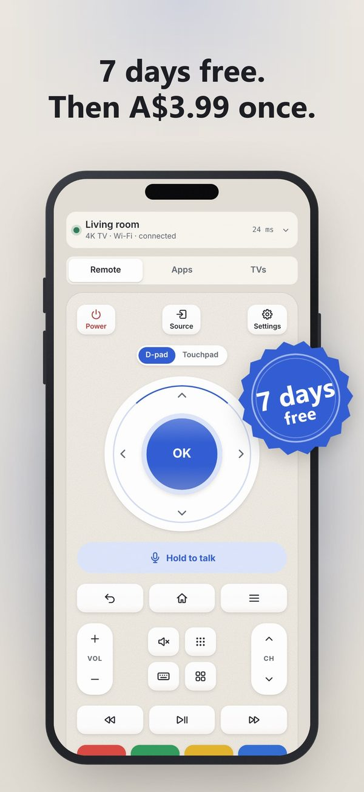

Couch: one remote for every TV in the house
Couch: TV Remote
Couch is a universal TV remote for iPhone. It controls smart TVs and streaming players over your home Wi-Fi: power, d-pad, touchpad, keyboard, volume, channels, app launcher and casting, for as many TVs as you own.
Free download with a 7-day free trial of the full remote and casting. Couch Plus is a one-time A$3.99 that unlocks them for good. No ads, no subscription. Available on App Store (iOS). iPhone only (iOS 16.4 or later). Not on Android or Google Play.






Why people pick Couch
One purchase, not a weekly plan
Try everything free for 7 days. Then Couch Plus is A$3.99 once, with Family Sharing. No ads in the remote.
Every TV in the house
Roku, Samsung Tizen, LG webOS and Google TV / Android TV (Fire TV in beta). Couch finds them on your Wi-Fi and switches between them in one tap.
Easy for everyone
Simple mode has big power, volume, channel and home buttons, and the buttons grow with your text size, with haptics and VoiceOver labels.
Couch compared with typical TV remote apps
| Couch | Typical TV remote app | |
|---|---|---|
| Price | 7-day free trial, then A$3.99 once | Weekly plans are common, often US$3-7 a week, alongside yearly plans and pricier lifetime options |
| Free trial | 7 days, never charges | Often starts a subscription that renews unless you cancel |
| Ads | None | Common, sometimes full-screen between button taps |
| Family Sharing | Yes | Often not offered |
| Casting from your phone | Photos and videos, included in Couch Plus | Offered by some apps, often inside the subscription |
| Big buttons and large text | Simple mode; buttons grow with your text size; VoiceOver labels | Layouts that break with larger text are a common complaint |
| Account and data | No account; Data Not Collected | Many collect usage or advertising data |
| Platforms | iPhone | Many are on both iPhone and Android |
Checked against public store listings on 12 November 2026. How we compared.
Questions
Is there a TV remote app for iPhone without a subscription?
Yes. Couch has no subscription: try the full remote and casting free for 7 days, then Couch Plus unlocks them once for A$3.99 (the App Store shows your local price). No ads and no account.
Which TVs does Couch work with?
TVs and streaming players running Roku, Samsung Tizen, LG webOS and Google TV / Android TV, with Fire TV in beta. They need to be on the same Wi-Fi as your iPhone.
How does the free trial work?
Start it from the Couch Plus screen. It never charges. After 7 days the remote and casting lock until you buy Couch Plus; finding and adding TVs stays free.
Can I use Couch if I lost my TV remote?
Usually. Couch finds the TV on your Wi-Fi. Some TVs ask you to press Allow or show a code on the TV the first time; if yours needs the physical remote for that, you'll need it once.
Does Couch have a keyboard?
Yes. Type searches and passwords on the TV with your phone's keyboard.
Can I cast photos and videos to my TV?
Yes, with Couch Plus. Pick photos or videos from your library and show them on a TV with Chromecast built in, a Roku player or a DLNA TV. The file is served from your phone over your home Wi-Fi.